Contents
%Written by Jon Komperda for Numerical Methods ME428 at UIC %Not to be distributed without express written consent.
Governing Equation
This program solves the boundary value problem:
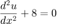
with the boundary conditions 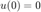 and 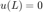.
Reduction into first-order ODEs
The governing equation is first caste into first-order differential equations so that we may apply the Runge-Kutta method for its solution.
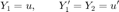
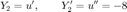
Discretization
The RK4 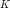 coefficients are then calculated.
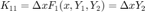
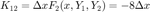
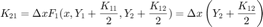
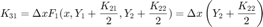
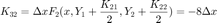
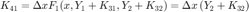
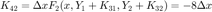
After this, we may select either RK1, RK2, or RK4 method. The equations for the RK1 update only use the 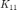 and $K_{12} coefficients and are shown to be,
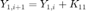
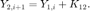
The RK2 update equations use the additional 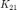 and 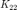, and are shown to be,
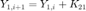
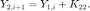
Finally, RK4 uses all eight coefficients. The update is the weighted averages of the coefficients, and is shown as,
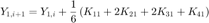
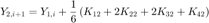
After the update, the solutions for and are retained as
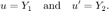
The Shooting Method
Since this is a boundary value problem (BVP), and the RK method only works on initial value problems (IVP), we must use shooting method to determine the correct value of 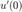 which satisfies . We provide two initial guesses, and run the RK procedure twice, which produces two values for 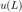. At the third iteration, we use shooting method to produce an improved guess for that should satisfy . This procedure continues until the convergence criteria are met.
The guess is produced by using the following shooting method equations,
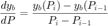
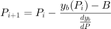
Note that for an IVP, you would not have to use the shooting method. This is only necessary because the equation this code is solving is a BVP.
%%%%%%%%%%%%%%%%%%%%%%%%%%%%%%%%%%%%%%%%%%%%%%%%%%%%%%%%%%% % This example shows how to use different RK methods in % % conjunction with the shooting method. You can specify: % % n = number of solution points % % eps = convergence criteria % % RKOrder = selects between RK1, RK2, and RK4 % % guess = this guesses Y2 % %%%%%%%%%%%%%%%%%%%%%%%%%%%%%%%%%%%%%%%%%%%%%%%%%%%%%%%%%%% n = 51; L = 1; eps=0.000001; RKOrder = 4; %This can be set to 1, 2, or 4 guess = 3; %%%%%%%%%%%%%%% % do not edit below here dx = L/(n-1); % Calculate \Delta x y1g = 0; % This is the known boundary condition on the left hand side y2g = guess; % This is our guess for the IVP first derivative... only change this one B = 0; % This is the correct, known, boundary condition on the right side %This is the shooting method loop k=1; err = 1; u = zeros(3,n); while(err>eps) if(k==1) % first iteration of shooting method % This sets our boundary conditions to our guesses y1(1) = y1g; y2(1) = y2g; elseif(k==2) % second iteration, we change the guess a little y1(1) = 1.1*y1g; y2(1) = 1.1*y2g; elseif(k>=3) y1(1)=y1g; y2(1)=p(k); end % this is the actual RK iteration for i=1:n-1 k11 = dx*y2(i); k12 = -8*dx; if(RKOrder==2 || RKOrder==4) %We only need this coefficient for RK2 and RK4 k21 = dx*(y2(i)+k12/2); k22 = -8*dx; end if(RKOrder==4) %We only need this coefficient for RK4 k31 = dx*(y2(i)+k22/2); k32 = -8*dx; k41 = dx*(y2(i)+k32); k42 = -8*dx; end switch RKOrder %Chooses which RK update we want to use case 4 %This is RK4 solution update y1(i+1) = y1(i)+(1/6)*(k11+2*k21+2*k31+k41); y2(i+1) = y2(i)+(1/6)*(k12+2*k22+2*k32+k42); case 2 %This is RK2 solution update y1(i+1) = y1(i)+k21; y2(i+1) = y2(i)+k22; case 1 %This is RK1 solution update y1(i+1) = y1(i)+k11; y2(i+1) = y2(i)+k12; end end yb(k) = y1(n); %store our last point for shooting method p(k) = y2(1); %store our guess for shooting method if(k>=2) %we start the shooting method improved guesses after the third iteration to yield a new improved guess dybdp = (yb(k)-yb(k-1))/(p(k)-p(k-1)); p(k+1) = p(k) - (yb(k)-B)/dybdp; %calculate our error err = abs(yb(k)-B) end %This just stores all of our iterations/guesses to plot later u(k,:)=y1(:); k=k+1 %iterate the guess number end %Plots some of our guesses to show what's happening figure(1) x = 0:dx:L; plot(x,u(1,:)) hold on plot(x,u(2,:)) plot(x,u(3,:)) xlabel('x') ylabel('u') legend('Guess #1','Guess #2','Shooting Method Guess'); title('Guesses from shooting method') "Shooting method guessed the Y2:" p(k) figure(2) plot(x,y1) xlabel('x') ylabel('u') title('The final answer for u')
k =
2
err =
0.7000
k =
3
err =
1.1380e-15
k =
4
ans =
"Shooting method guessed the Y2:"
ans =
4.0000
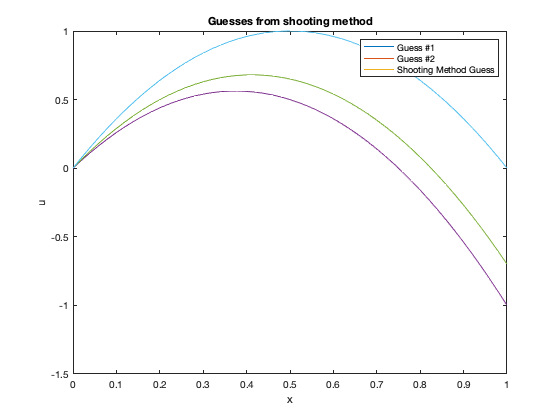 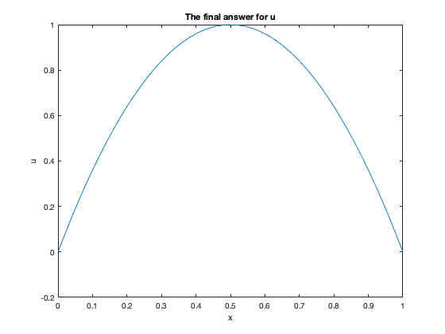